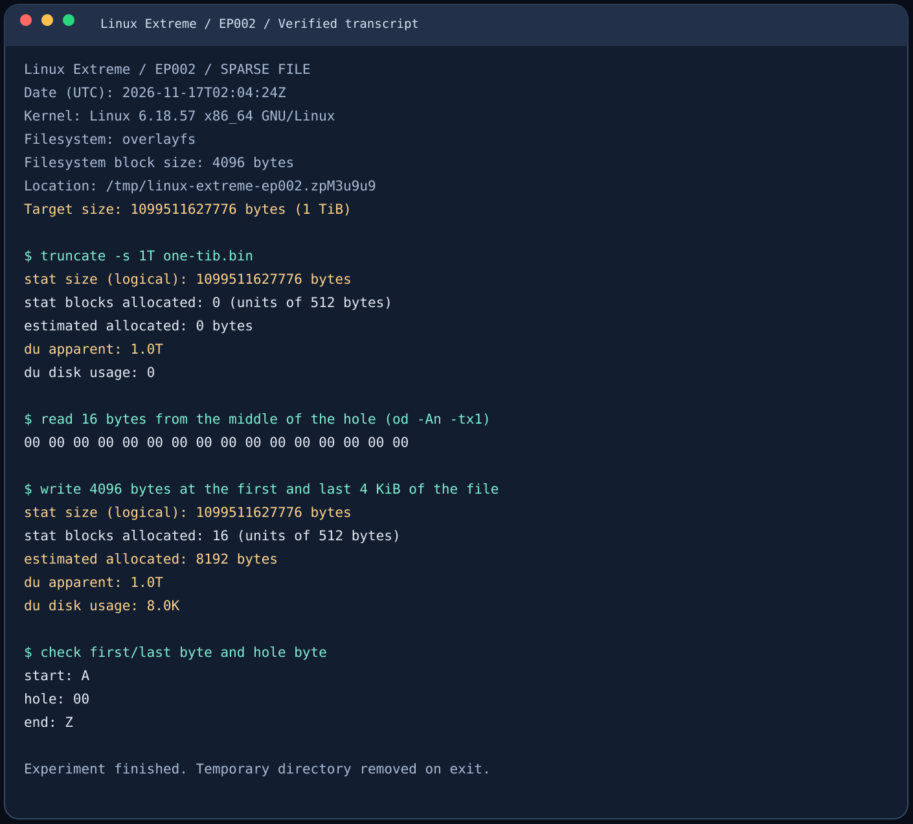

1 TiB 的文件，
为什么只占 8 KiB？
假设磁盘根本没有 1 TiB 空闲空间，Linux 能不能创建一个大小为 1 TiB 的文件？答案藏在逻辑长度、数据块分配与「文件空洞」的区别中。
01 · The Challenge
本次挑战使用 truncate -s 1T one-tib.bin。GNU coreutils 的 1T 表示 2⁴⁰ 字节，即 1 TiB。对于支持稀疏文件的文件系统，扩展文件长度时可以不为中间未写入的数据区分配物理块。
安全边界：只设置逻辑长度并写入 8 KiB。不会执行写满 1 TiB 或提前为 1 TiB 分配磁盘块的操作。请使用专用测试环境。
02 · The Experiment
下载 实验脚本 ep002.sh，在 Linux 环境运行：
bash ep002.sh
# 在本地保留标准输出与错误输出
bash ep002.sh 2>&1 | tee ep002-output.txt脚本通过 mktemp 建立独立目录，并通过 trap ... EXIT 自动清理；按顺序执行长度设置、块数统计、空洞读取以及首尾各 4096 字节的真实写入和校验。
实验实录 · Verified Run
2026 年 11 月 17 日，在 Linux 6.18.57 x86-64 / overlayfs 上实际运行，进程退出状态为 0。下面这张模拟终端截图由程序使用真实记录的 output.txt 绘制，不是人工截图；所有数值均可在原始日志中核对。


03 · The Breaking Point
| 操作 | 文件逻辑大小 | 本次实测已分配空间 |
|---|---|---|
| truncate 后 | 1 TiB | 0 B |
| 首尾分别写入 4 KiB | 1 TiB | 8192 B（8 KiB） |
du --apparent-size -h 报告 1.0T，而普通 du -h 最初报告 0，写入后报告 8.0K。这两个统计值回答了不同的问题。stat -c '%s %b %B' 给出逻辑长度、分配块数和块单位：本次后两者为 16 × 512 字节。
首块
末块
在偏移量 1 GiB 读取连续 16 个字节，得到 16 个 00；随后读回首字节 A、中间字节 00 和末字节 Z。数据正确，空洞也正确。
04 · Under the Hood
st_size 与 i_size：逻辑长度
普通文件在内核文件系统层有长度信息；当 truncate 扩展它时，这个数值可以在没有写入全部对应数据的情况下更新。文件末尾的位置与磁盘块的分配数量相互独立。
st_blocks：已分配空间
stat 的 st_blocks 以 512 字节为单位描述分配量；不要把它等同于整个文件系统的全部元数据开销。文件系统类型、压缩、延迟分配、配额、快照与写时复制可能影响观察到的值。
Hole：空洞为什么能读出 0？
文件中的未写入区域可以没有实际数据块映射。对该区域的读取按照文件语义表现为零字节。Linux 的 lseek(SEEK_DATA/SEEK_HOLE) 可以探索数据区与空洞，但文件系统支持和报告粒度存在差异。
参考手册：truncate(2) · stat(2) · lseek(2) · GNU truncate。
05 · Beyond the Limit
稀疏文件的“低占用”可能在普通复制或恢复时消失：原先未分配的区域可能被写成真实零字节，导致实际存储需求激增。GNU cp --sparse=always 和 tar --sparse 可以帮助保留空洞，但需要理解目标文件系统、归档格式和工具实现。
# 安全的小规模复制实验（只有 64 MiB 逻辑长度）
truncate -s 64M sample.bin
printf X | dd of=sample.bin bs=1 seek=0 conv=notrunc status=none
cp --sparse=always sample.bin copy.bin
stat -c '%n: size=%s blocks=%b unit=%B' sample.bin copy.bin
rm -f -- sample.bin copy.binfallocate -l 1T 通常会预分配空间，不能用作本挑战中的“几乎不占磁盘”的替代命令。千万别在存储受限的机器上未经评估就尝试。
06 · The Next Question
当文件名、逻辑长度和实际数据块可以独立变化时，又一个谜题出现了：为什么 Linux 中一个已经被删除的文件，仍有可能占据磁盘空间？ 下次我们继续寻找 inode 与文件描述符的边界。